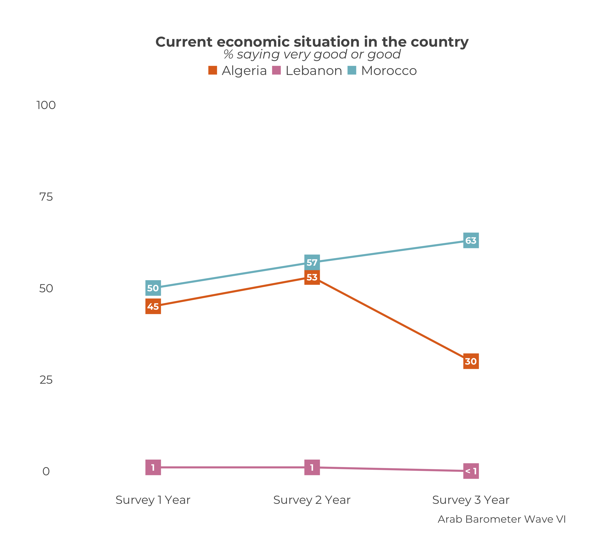

Chapter 8 Comparative Country Trend Graphs
The chapter covers how to create a trend graph for many countries, not just one.
8.1 Create Comparative Trend Graph
At the end, your code will look like the following:
df_list <- list(
survey1,
survey2,
survey3
)
survey_dates <- c("Survey 1",
"Survey 2",
"Survey 3")
plot_trend_comp("Q1COVID19",
df_list,
survey_dates,
.caption "Arab Barometer Wave VI")The code produces this graph:

You may notice that the code here is very similar to that for single country trend graphs. In fact, the only differences are that the user does not have to specify a country and the names of the function.
Let’s go!
8.1.1 Prep Work
Similar to creating a trend graph for an individual country, there is no need to create a summary. There is only one function to use: plot_trend_comp().
You can create the plot all in one step with the function, but it is prudent to do a little prep work before hand. This makes your work more clear and your life easier down the line.
Create a Data Frame List
The first step is to create a list of data frames.
There should be one data frame for each period you wish to graph. That is, each data frame should be from a different survey you want to include in your graph. In the example for the chapter, we’re using the three surveys from Wave VI, which we call survey1, survey2, and survey3. Each survey is its own data frame.
df_list <- list(
survey1,
survey2,
survey3
)The list of data frames should be in the order you want them to appear (ideally, chronologically). The data on the graph will show up in the order of the list. So if you create a list in the order list(survey2, survey1, survey3), the data from survey2 will show up before the data from survey1.
Please note: This is ambivalent to language! The plot_trend_comp() function will assume the order of the list is the correct order, and treat it accordingly. When you enter a list as list(survey1, survey2, surveye3), the English graph will show the data right to left (survey 1 -> survey 2 -> survey 3), while the Arabic graph will show the data left to right (survey 3 <- survey 2 <- survey 1). You do not need to alter your input.
Create a Date Vector
The next step is to create a vector of the dates you want to show on the x-axis of your graph. Branding guidelines call for the years in which the survey took place. For simplicity in the example, let’s just say "Survey X Year".
You need a date for each data frame in your data frame list. Otherwise, the function won’t know how to label the x-axis.
survey_dates <- c("Survey 1 Year",
"Survey 2 Year",
"Survey 3 Year")The dates should also be in the order you want them to appear. The dates should line up with the data frames. In the chapter example, the order of the data frames is survey 1, survey 2, survey 3. Therefore, the survey dates need to have the order survey 1 year, survey 2 year, survey 3 year.
Please note: This is ambivalent to language! Just as with the data frame list, the plot_trend_comp() function will put the data in the correct order according to the language of the graph.
Now that we have defined our data frame list and survey dates, we can create our trend plot.
8.1.2 Plot a Comparative Trend Graph
To create a trend graph plot for an individual country, use the plot_trend_comp() function.
This function takes a few more parameters, and in a different order, than the functions we have worked with so far. In total, there are three necessary parameters: .var, data_frames, and svry_dates. To see a complete list of parameters, including optional ones, use ?plot_trend_comp() in your R console.
The parameter .var is the variable you want to plot. It must have the same name in every data frame in the data frame list. If the variable you want to plot is named "Q101" in one sure, but "Q102" in another, the function will not include "Q102" in the plot. Computers can do a lot but as of yet they cannot think critically, so the onus is on you.
The parameter data_frames is a list of data frames. This is what we created here.
The parameter svry_dates is a character vector of dates that will show up on the x-axis of the graph. This is what we created here.
Now let’s fill it in.
plot_trend_comp(.var = "Q1COVID19", # Variable to graph
data_frames = df_list, # List of data frames
svry_dates = survey_dates) # Vector of survey datesNearly there! What still needs to be changed?
The caption, of course! Just as in all the other plot_ functions in the ArabBarometR package, you can change the caption using the .caption parameter.
plot_trend_comp(.var = "Q1COVID19",
data_frames = df_list,
svry_dates = survey_dates,
.caption = "Arab Barometer Wave VI") 
Putting all the steps together, we have the code and graph we originally started with.

df_list <- list(
survey1,
survey2,
survey3
)
survey_dates <- c("Survey 1 Year",
"Survey 2 Year",
"Survey 3 Year")
plot_trend_comp("Q1COVID19",
df_list,
survey_dates,
.caption = "Arab Barometer Wave VI")8.2 Create Many Graphs
A nice payoff of creating the data frame list and the date vector is that these objects (df_list and survey_dates) can be re-used any time you want to create a graph over the same time period.
For example, say you wanted to also create a graph tracking the region’s views of the economy and religiosity. The only parameter in the plot_trend_comp() function that needs updating is .var.
df_list <- list(
survey1,
survey2,
survey3
)
survey_dates <- c("Survey 1 Year",
"Survey 2 Year",
"Survey 3 Year")
plot_trend_comp("Q1COVID19",
df_list,
survey_dates,
.caption = "Arab Barometer Wave VI")
plot_trend_comp("Q101",
df_list,
survey_dates,
.caption = "Arab Barometer Wave VI")
plot_trend_comp("Q609",
df_list,
survey_dates,
.caption = "Arab Barometer Wave VI")Notice that the code produced two graphs, even though df_list and survey_dates were only defined one time. Once you have created the df_list and survey_dates objects, you can re-use them for any graph that is covering the same time period.
You can also you the map() function from the purrr package. This method is similar to what was done for creating many single country graphs, many single country demographic graphs, many comparative graphs, and many comparative demographic graphs.
As a quick review, in earlier chapters the first step was identify the variables to plot. We did that by creating a named list of of the variables we wanted to plot.
The second step was creating a list of summaries by give the summarize function the named variable list.
The third and final step was mapping that list of summaries to the related plot function. In the mapping function, we would hold the caption constant since we wanted the same caption to appear on every graph.
The plot_trend_comp() function creates summaries internally, so we can “skip” the second step. Once we identify our variables, we go right to the mapping step. We map a named list of variables to the plot_trend_comp() function. We want to create a graph for all countries over the same time period, just using different variable, so we hold the data frame list, survey dates, and caption constant.
8.2.1 Identify the Variables
We are creating trend graphs for the variables Q1COVID19, Q101, and Q609.
variables_2_plot <- list("Q1COVID19",
"Q101",
"Q609")
names(variables_2_plot) <- c("Q1COVID19",
"Q101",
"Q609")Now you have a names list of variables. Let’s plot them.
8.2.2 Plot the Variables
Recall we want to hold constant the data_frames, svry_dates, and .caption parameters because those will be the same for every graph. The only parameter we want to vary is .var.
plots <- map(
variables_2_plot, # Vector of variables to plot
plot_trend_comp, # Map to function `plot_trend_comp()`
data_frames = df_list, # Hold constant the `data_frames` parameter
svry_dates = survey_dates, # Hold constant the `svry_dates` parameter
.caption = "Arab Barometer Wave VI"
)Excellent!
The plots have been saved to a named list called plots. To access the plots for each variable, you can use the $ and variable name.
# Trend graph for Q1COVID19
plots$Q1COVID19# Trend graph for Q101
plots$Q101
# Trend graph for Q609
plots$Q609
You’ve done it! You have created many trend plots at once!